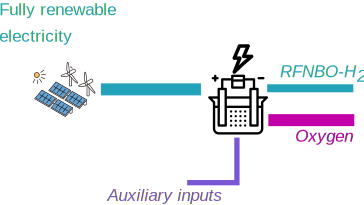
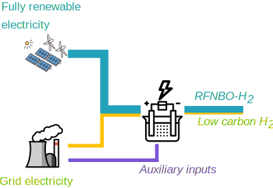
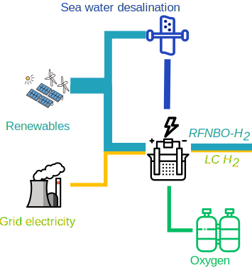

Overview
What is the purpose of this site?
This document was created to help to understand how the calculation of carbon intensity and share of RFNBO and RCF should be implemented. Each case study focuses on one element that might be unclear. The last case study of each section (H for hydrogen and R for RFNBO/RCF) shows a more complex and realistic case, combining different specific aspects presented in the simple case studies.
Legal notes
This document was created to help stakeholders understand and think about the GHG calculation methodology for RCF and RFNBO. It should not be considered as representative of the European Commission’s official position and does not involve the European Commission in liability of any kind.
Icons that have been used to generate the images:
- Soco St in CC Attribution License via SVG Repo
- Openmoji.org in CC Attribution License via SVG Repo
- Icon by Freepik
- Refinery: https://www.svgrepo.com/svg/424697/factory-illustration-industry-3
- Tree: Pixelbazaar in CC Attribution License via SVG Repo
- Biogenic power plant: https://www.pngrepo.com/svg/133519/power-plant, https://www.svgrepo.com/svg/474743/biomass, Vectors and icons by Neuicons in MIT License via SVG Repo
- Tanker: https://www.iconfinder.com/icons/4047319/gas_oil_ship_tank_tanker_icon
- Factory: Etn Ccis in MIT License via SVG Repo
- Heat: Nagoshiashumari in GPL License via SVG Repo
- Plane: Icooon Mono in PD License via SVG Repo
- Truck: svg iconsis licensed by CC BY 4.0
- Direct air capture: https://www.svgrepo.com/svg/265869/ventilator-cool
- Desalination: Timofei Rostilov in CC Attribution License via SVG Repo
- Oxygen tank: https://www.svgrepo.com/svg/285543/oxygen-tank
-

- How to allocate emissions to oxygen
- How to calculate the share of RFNBO with emissions from auxiliaries
-

- How to average over different timeframes
-

- System boundaries
- Where to find more information
-

- How to determine if an energy input is “relevant”
-

- How to count different integrated processes together
-
R3: Biofuels and RFNBO co-production

- How to split biogenic and RFNBO-parts
-
R4: Partly replacing fossil inputs

- How to split RFNBO part from fossil inputs in existing fossil processes
-
R5: Allocation to co-produced heat

- How to allocate e_ex_use to co-products without carbon
-
 R6: Full hydrogen to liquid example
R6: Full hydrogen to liquid example

- How to combine the previous examples and where to find additional information.